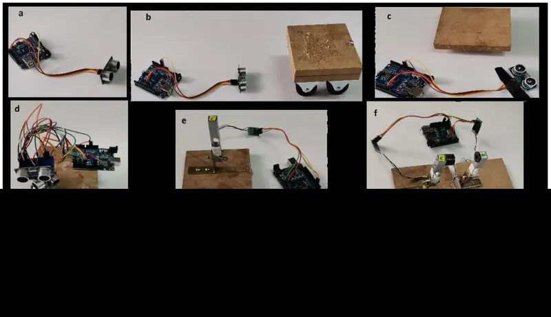

Hands-On Technical Learning
My work
Designed Arduino activities in which learners collect sensor data and investigate physical systems.
Workplace use
Build training kits and workshops for equipment setup, measurement and troubleshooting.
- My role
- Design of technical learning activities
- Tools and methods
- Arduino · physical models · sensors
How I designed the activities
I developed Arduino-based mechanics activities that combine a physical setup, sensor readings and guided analysis. Learners set up equipment, collect data and explain what the readings reveal about the system. This connects a technical action to the principle behind it.
Workplace applications
In a technician workshop, learners could connect a sensor, take a baseline measurement and investigate an unexpected reading. A facilitator can model the first check, then hand responsibility to learners as they work through the diagnosis.
How to evaluate it
Ask learners to repeat the setup independently and explain how they isolated the fault. Record setup errors, checks skipped and time to a reliable reading.
Project image
